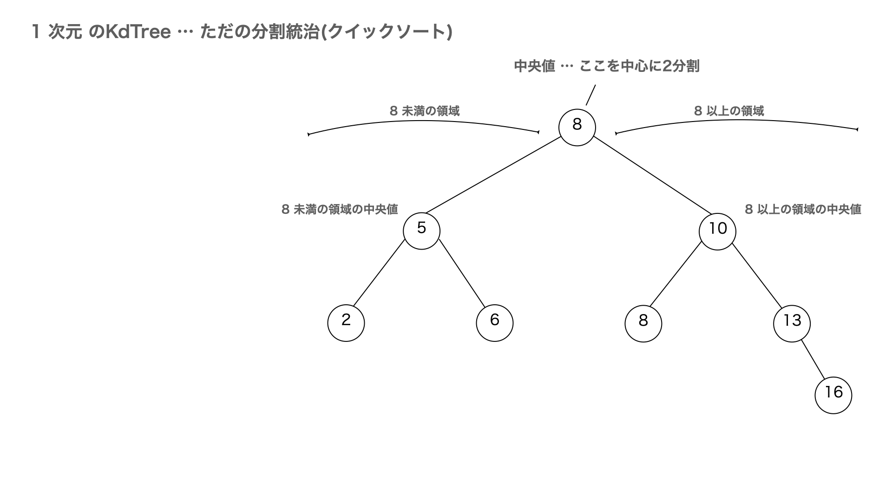
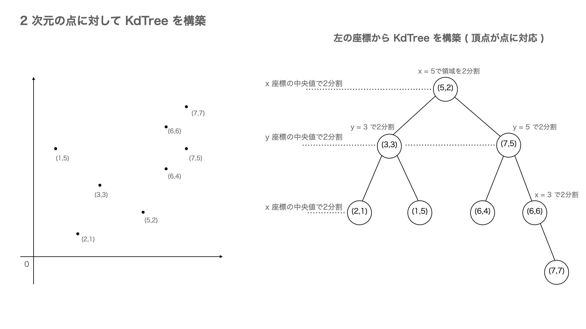
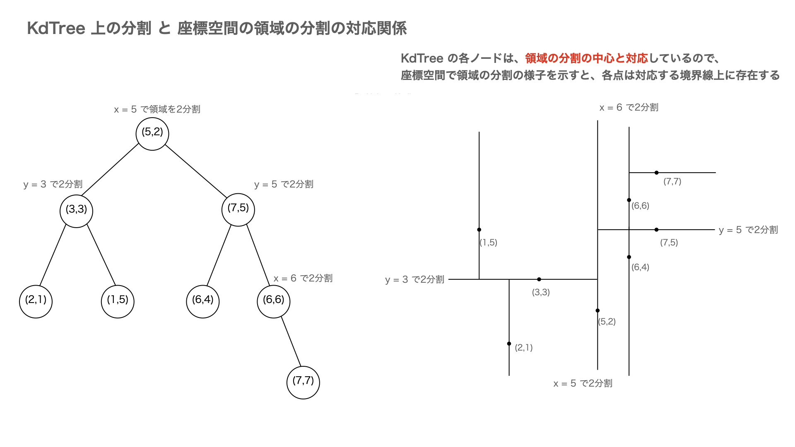
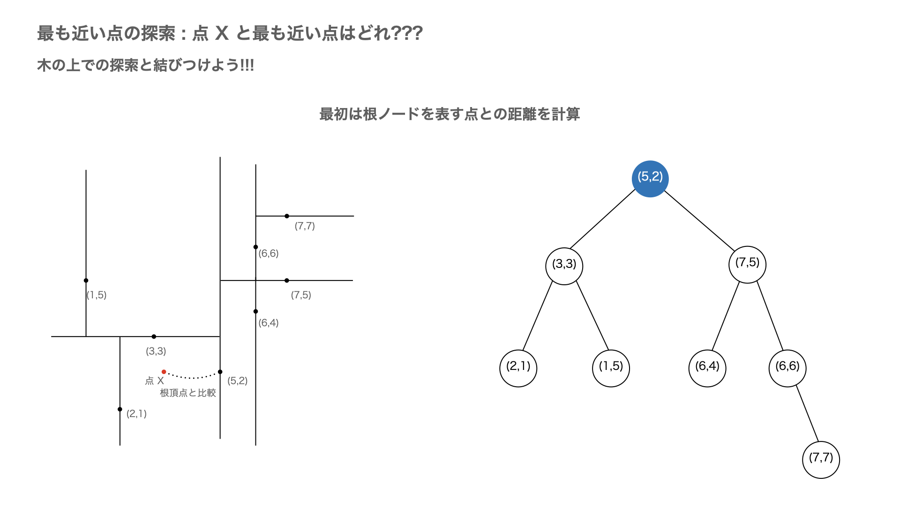
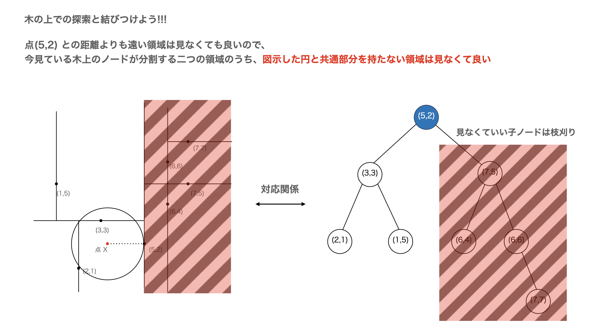
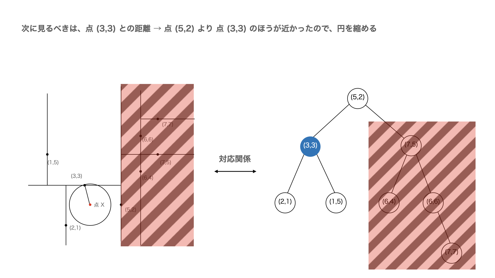
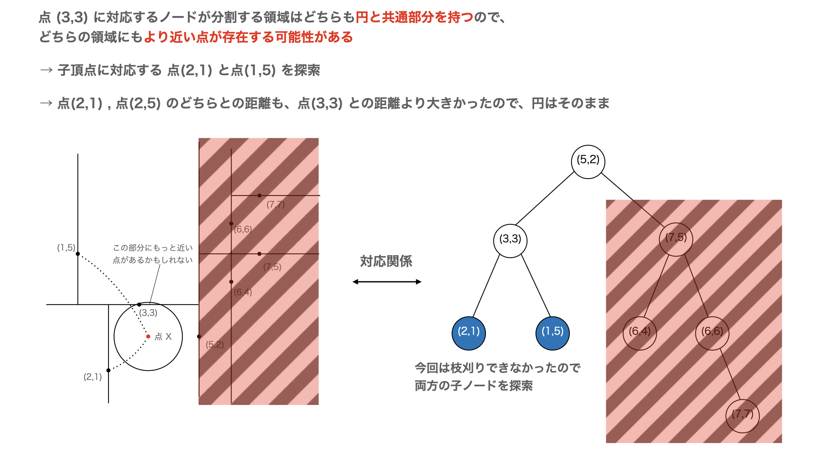
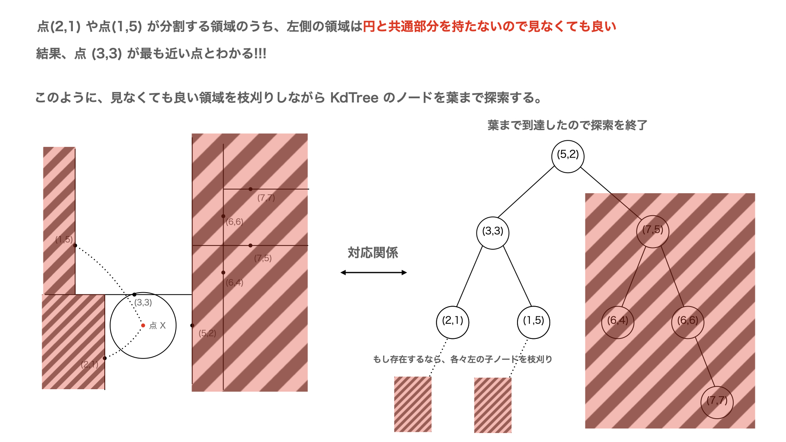

KdTreeというデータ構造があります。KdTree は \(k\) 次元空間内の点(座標)を二分木で管理して高速な検索を可能にするデータ構造です。KdTreeでは、点の集合を中央値で二分して分割統治します。

しかし、点は \(k\) 次元空間の座標なので探索の Key となる値は \(k\) 個あり、\(k\) 個の座標それぞれについて上手く分割しければ探索することができません。
そこで、ノードの深さによって、中央値によって分割する Key(座標) を変えるという構築方法にします。つまり、二分木で深さが \(i\) の領域の分割は、\(i \mod{k}\) 番目の座標の値を見て分割することにします。
例えば座標が \((x,y,z)\) で表される 3 次元空間における KdTree では以下のような分割になります。

二分木での分割は、元の座標上の直線の仕切りと対応づけられます。

このように構築した KdTree 上では、点に関する探索を高速に行うことができます。例えば、ある点 \(X\) に最も近い点を探索する動作は、ランダムに点が配置された \(k\) 次元の空間であれば \(O(k\log{N})\) 時間で可能です (ハックケースでは \(O(N^2)\) になります😢) 。




